本文链接：https://www.cnblogs.com/ljl150/p/12934071.html
** 最左前缀匹配原则：** 在 MySQL 建立联合索引时会遵守最左前缀匹配原则，即最左优先，在检索数据时从联合索引的最左边开始匹配。
要想理解联合索引的最左匹配原则，先来理解下索引的底层原理。索引的底层是一颗 B + 树，那么联合索引的底层也就是一颗 B + 树，只不过联合索引的 B + 树节点中存储的是键值。由于构建一棵 B + 树只能根据一个值来确定索引关系，所以数据库依赖联合索引最左的字段来构建。
举例：创建一个（a,b）的联合索引，那么它的索引树就是下图的样子。
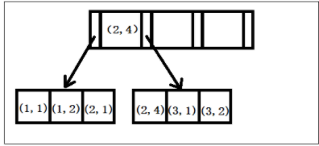
可以看到 a 的值是有顺序的，1，1，2，2，3，3，而 b 的值是没有顺序的 1，2，1，4，1，2。但是我们又可发现 a 在等值的情况下，b 值又是按顺序排列的，但是这种顺序是相对的。这是因为 MySQL 创建联合索引的规则是首先会对联合索引的最左边第一个字段排序，在第一个字段的排序基础上，然后在对第二个字段进行排序。所以 b=2 这种查询条件没有办法利用索引。
由于整个过程是基于 explain 结果分析的，那接下来在了解下 explain 中的 type 字段和 key_lef 字段。
1.type：联接类型。下面给出各种联接类型，按照从最佳类型到最坏类型进行排序:（重点看 ref,rang,index）
system：表只有一行记录（等于系统表），这是 const 类型的特例，平时不会出现，可以忽略不计
const：表示通过索引一次就找到了，const 用于比较 primary key 或者 unique 索引。因为只需匹配一行数据，所有很快。如果将主键置于 where 列表中，mysql 就能将该查询转换为一个 const
eq_ref：唯一性索引扫描，对于每个索引键，表中只有一条记录与之匹配。常见于主键 或 唯一索引扫描。
注意：ALL 全表扫描的表记录最少的表如 t1 表
ref：非唯一性索引扫描，返回匹配某个单独值的所有行。本质是也是一种索引访问，它返回所有匹配某个单独值的行，然而他可能会找到多个符合条件的行，所以它应该属于查找和扫描的混合体。
range：只检索给定范围的行，使用一个索引来选择行。key 列显示使用了那个索引。一般就是在 where 语句中出现了 bettween、<、>、in 等的查询。这种索引列上的范围扫描比全索引扫描要好。只需要开始于某个点，结束于另一个点，不用扫描全部索引。
index：Full Index Scan，index 与 ALL 区别为 index 类型只遍历索引树。这通常为 ALL 块，应为索引文件通常比数据文件小。（Index 与 ALL 虽然都是读全表，但 index 是从索引中读取，而 ALL 是从硬盘读取）
ALL：Full Table Scan，遍历全表以找到匹配的行
2.key_len：显示 MySQL 实际决定使用的索引的长度。如果索引是 NULL，则长度为 NULL。如果不是 NULL，则为使用的索引的长度。所以通过此字段就可推断出使用了那个索引。
计算规则：
1. 定长字段，int 占用 4 个字节，date 占用 3 个字节，char (n) 占用 n 个字符。
2. 变长字段 varchar (n)，则占用 n 个字符 + 两个字节。
3. 不同的字符集，一个字符占用的字节数是不同的。Latin1 编码的，一个字符占用一个字节，gdk 编码的，一个字符占用两个字节，utf-8 编码的，一个字符占用三个字节。
（由于我数据库使用的是 Latin1 编码的格式，所以在后面的计算中，一个字符按一个字节算）
4. 对于所有的索引字段，如果设置为 NULL，则还需要 1 个字节。
接下来进入正题！！！
示例：
首先创建一个表
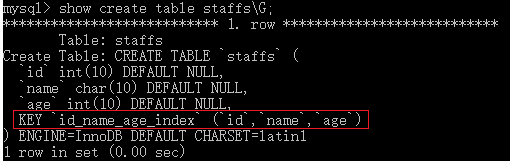
该表中对 id 列.name 列.age 列建立了一个联合索引 id_name_age_index，实际上相当于建立了三个索引（id）（id_name）（id_name_age）。
下面介绍下可能会使用到该索引的几种情况：
1. 全值匹配查询时
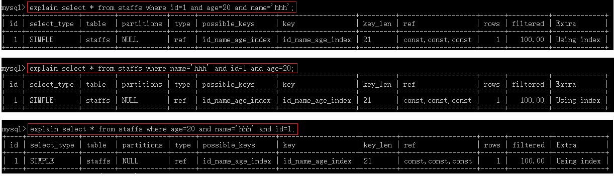
通过观察上面的结果图可知，where 后面的查询条件，不论是使用（id，age，name）（name，id，age）还是（age，name，id）顺序，在查询时都使用到了联合索引，可能有同学会疑惑，为什么底下两个的搜索条件明明没有按照联合索引从左到右进行匹配，却也使用到了联合索引？ 这是因为 MySQL 中有查询优化器 explain，所以 sql 语句中字段的顺序不需要和联合索引定义的字段顺序相同，查询优化器会判断纠正这条 SQL 语句以什么样的顺序执行效率高，最后才能生成真正的执行计划，所以不论以何种顺序都可使用到联合索引。另外通过观察上面三个图中的 key_len 字段，也可说明在搜索时使用的联合索引中的（id_name_age）索引，因为 id 为 int 型，允许 null，所以占 5 个字节，name 为 char (10)，允许 null，又使用的是 latin1 编码，所以占 11 个字节，age 为 int 型允许 null，所以也占用 5 个字节，所以该索引长度为 21（5+11+5），而上面 key_len 的值也正好为 21，可证明使用的（id_name_age）索引。
2. 匹配最左边的列时
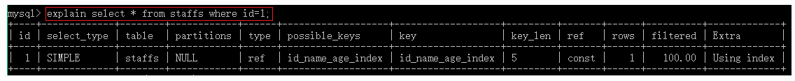
该搜索是遵循最左匹配原则的，通过 key 字段也可知，在搜索过程中使用到了联合索引，且使用的是联合索引中的（id）索引，因为 key_len 字段值为 5，而 id 索引的长度正好为 5（因为 id 为 int 型，允许 null，所以占 5 个字节）。
{kind=link}
由于 id 到 name 是从左边依次往右边匹配，这两个字段中的值都是有序的，所以也遵循最左匹配原则，通过 key 字段可知，在搜索过程中也使用到了联合索引，但使用的是联合索引中的（id_name）索引，因为 key_len 字段值为 16，而 (id_name) 索引的长度正好为 16（因为 id 为 int 型，允许 null，所以占 5 个字节，name 为 char (10)，允许 null，又使用的是 latin1 编码，所以占 11 个字节）。
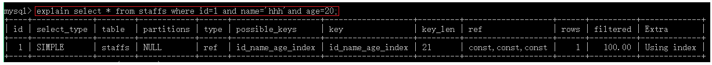
由于上面三个搜索都是从最左边 id 依次向右开始匹配的，所以都用到了 id_name_age_index 联合索引。
那如果不是依次匹配呢？
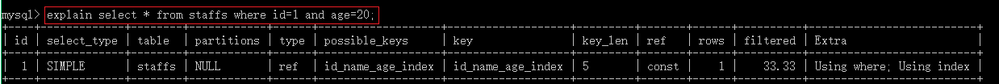
通过 key 字段可知，在搜索过程中也使用到了联合索引，但使用的是联合索引中的（id）索引，从 key_len 字段也可知。因为联合索引树是按照 id 字段创建的，但 age 相对于 id 来说是无序的，只有 id 只有序的，所以他只能使用联合索引中的 id 索引。
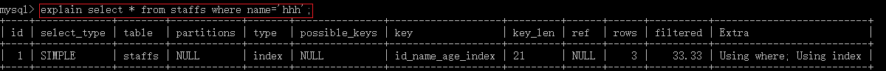
通过观察发现上面 key 字段发现在搜索中也使用了 id_name_age_index 索引，可能许多同学就会疑惑它并没有遵守最左匹配原则，按道理会索引失效，为什么也使用到了联合索引？因为没有从 id 开始匹配，且 name 单独来说是无序的，所以它确实不遵循最左匹配原则，然而从 type 字段可知，它虽然使用了联合索引，但是它是对整个索引树进行了扫描，正好匹配到该索引，与最左匹配原则无关，一般只要是某联合索引的一部分，但又不遵循最左匹配原则时，都可能会采用 index 类型的方式扫描，但它的效率远不如最做匹配原则的查询效率高，index 类型类型的扫描方式是从索引第一个字段一个一个的查找，直到找到符合的某个索引，与 all 不同的是，index 是对所有索引树进行扫描，而 all 是对整个磁盘的数据进行全表扫描。
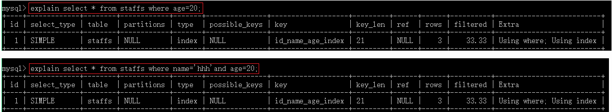
这两个结果跟上面的是同样的道理，由于它们都没有从最左边开始匹配，所以没有用到联合索引，使用的都是 index 全索引扫描。
3. 匹配列前缀
如果 id 是字符型，那么前缀匹配用的是索引，中坠和后缀用的是全表扫描。
select * from staffs where id like 'A%';// 前缀都是排好序的，使用的都是联合索引 | |
select * from staffs where id like '%A%';// 全表查询 | |
select * from staffs where id like '%A';// 全表查询 |
4. 匹配范围值
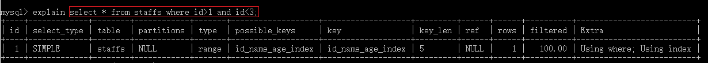
在匹配的过程中遇到 <>= 号，就会停止匹配，但 id 本身就是有序的，所以通过 possible_keys 字段和 key_len 字段可知，在该搜索过程中使用了联合索引的 id 索引（因为 id 为 int 型，允许 null，所以占 5 个字节），且进行的是 rang 范围查询。
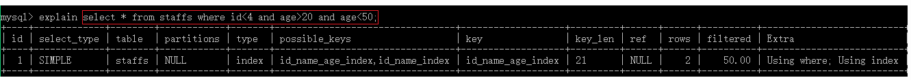
由于不遵循最左匹配原则，且在 id<4 的范围中，age 是无序的，所以使用的是 index 全索引扫描。
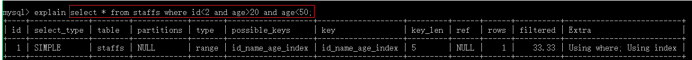
不遵循最左匹配原则，但在数据库中 id<2 的只有一条（id），所以在 id<2 的范围中，age 是有序的，所以使用的是 rang 范围查询。
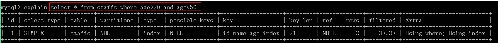
不遵循最左匹配原则，而 age 又是无序的，所以进行的全索引扫描。
5. 准确匹配第一列并范围匹配其他某一列
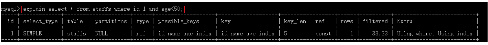
由于搜索中有 id=1，所以在 id 范围内 age 是无序的，所以只使用了联合索引中的 id 索引。